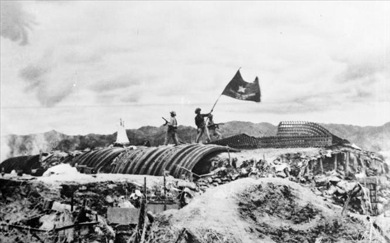

Hồ Chí Minh
Chủ tịch Hồ Chí Minh

Chủ tịch Hồ Chí Minh
Chủ tịch Hồ Chí Minh (tên lúc nhỏ là Nguyễn Sinh Cung, tên khi đi học là Nguyễn Tất Thành, trong nhiều năm hoạt động cách mạng trước đây lấy tên là Nguyễn Ái Quốc), sinh ngày 19/5/1890 ở làng Kim Liên, xã Nam Liên (nay là xã Kim Liên), huyện Nam Đàn, tỉnh Nghệ An; mất ngày 02/9/1969 tại Hà Nội.
Hồ Chí Minh sinh ra trong một gia đình nhà nho yêu nước, lớn lên ở một địa phương có truyền thống anh dũng chống giặc ngoại xâm. Sống trong hoàn cảnh đất nước chìm dưới ách đô hộ của thực dân Pháp, thời niên thiếu và thanh niên của mình, Hồ Chí Minh đã chứng kiến nỗi khổ cực của đồng bào và những phong trào đấu tranh chống thực dân, Hồ Chí Minh sớm có chí đuổi thực dân, giành độc lập cho đất nước, đem lại tự do, hạnh phúc cho đồng bào. Với ý chí và quyết tâm đó, tháng 6/1911, Hồ Chí Minh đã rời Tổ quốc đi sang phương Tây để tìm con đường giải phóng dân tộc
Câu chuyện của Bác Hồ
Dòng thời gian của Bác
03/6/1911
Nguyễn Tất Thành nhận thẻ nhân viên lên con tàu Amiran Latusơ Tơrêvin với cái tên là Văn Ba. Hai ngày sau, 05/6/1911 con tàu rời cảng Nhà Rồng đến Pháp.
1912 - 1917
Dưới cái tên Nguyễn Tất Thành, Hồ Chí Minh đến nhiều nước ở châu Á, châu Âu, châu Mỹ, châu Phi, sống hoà mình với nhân dân lao động. Qua thực tiễn, Hồ Chí Minh cảm thông sâu sắc cuộc sống khổ cực của nhân dân lao động và các dân tộc thuộc địa cũng như nguyện vọng thiêng liêng của họ. Hồ Chí Minh sớm nhận thức được cuộc đấu tranh giải phóng dân tộc của nhân dân Việt Nam là một bộ phận trong cuộc đấu tranh chung của nhân dân thế giới và tích cực hoạt động nhằm đoàn kết nhân dân các dân tộc trong cuộc đấu tranh giành độc lập, tự do.
Cuối năm 1917, Hồ Chí Minh từ Anh trở lại Pháp, hoạt động trong phong trào Việt kiều và phong trào công nhân Pháp.
1919 - 1925
Năm 1921, cùng với một số người yêu nước của các thuộc địa Pháp, Nguyễn Ái Quốc tham gia sáng lập Hội Liên hiệp các dân tộc thuộc địa. Tháng 4/1922, Hội xuất bản báo “Người cùng khổ” (Le Paria) nhằm đoàn kết, tổ chức và hướng dẫn phong trào đấu tranh giải phóng dân tộc ở các nước thuộc địa. Nhiều bài báo của Nguyễn Ái Quốc đã được đưa vào tác phẩm “Bản án chế độ thực dân Pháp”, xuất bản tại Paris năm 1925. Đây là một công trình nghiên cứu về bản chất của chủ nghĩa thực dân, góp phần thức tỉnh và cổ vũ nhân dân các nước thuộc địa đứng lên tự giải phóng.
Tháng 6/1923, Nguyễn Ái Quốc từ Pháp sang Liên Xô, làm việc tại Quốc tế Cộng sản. Tháng 10/1923, tại Hội nghị Quốc tế Nông dân lần thứ nhất, Nguyễn Ái Quốc được bầu vào Hội đồng Quốc tế Nông dân và là đại biểu duy nhất của nông dân thuộc địa được cử vào Đoàn Chủ tịch của Hội đồng. Tiếp đó tham dự Đại hội Quốc tế Cộng sản lần thứ V, Đại hội Quốc tế Thanh niên lần thứ IV, Đại hội Quốc tế Công hội đỏ. Tại các đại hội, Nguyễn Ái Quốc kiên trì bảo vệ và phát triển sáng tạo tư tưởng của V.I. Lênin về vấn đề dân tộc và thuộc địa, hướng sự quan tâm của Quốc tế Cộng sản tới phong trào giải phóng dân tộc.
Tháng 11/1924, với tư cách là Uỷ viên Ban Phương Đông Quốc tế Cộng sản và Uỷ viên Đoàn Chủ tịch Quốc tế Nông dân, Nguyễn Ái Quốc đến Quảng Châu (Trung Quốc). Tại Quảng Châu, Nguyễn Ái Quốc làm việc trong đoàn cố vấn Bôrôđin của Chính phủ Liên Xô bên cạnh Chính phủ Tôn Dật Tiên.|
Năm 1925, Nguyễn Ái Quốc thành lập Hội Việt Nam Cách mạng Thanh niên, trực tiếp mở lớp huấn luyện đào tạo cán bộ cách mạng, ra tuần báo “Thanh niên”, tờ báo cách mạng đầu tiên của Việt Nam nhằm truyền bá chủ nghĩa Mác - Lênin về Việt Nam, chuẩn bị cho việc thành lập Đảng Cộng sản Việt Nam. Các bài giảng của Nguyễn Ái Quốc tại các lớp huấn luyện được tập hợp in thành sách “Đường Kách mệnh” - một văn kiện lý luận quan trọng đặt cơ sở tư tưởng cho đường lối cách mạng Việt Nam.
5/1927 - 6/1931
Tháng 5/1927, Nguyễn Ái Quốc rời Quảng Châu đi Mátxcơva (Liên Xô), sau đó đi Béclin (Đức), đi Brúcxen (Bỉ), tham dự phiên họp mở rộng của Đại hội đồng Liên đoàn chống chiến tranh đế quốc, sau đó đi Ý và từ đây về châu Á.
Từ tháng 7/1928 đến tháng 11/1929, Nguyễn Ái Quốc hoạt động trong phong trào Việt kiều yêu nước ở Xiêm (Thái Lan), tiếp tục chuẩn bị cho sự ra đời của Đảng Cộng sản Việt Nam.
Tháng 2/1930, Nguyễn Ái Quốc chủ trì Hội nghị thành lập Đảng họp tại Cửu Long, thuộc Hồng Kông (Trung Quốc). Hội nghị đã thông qua Chính cương vắn tắt, Sách lược vắn tắt, Điều lệ vắn tắt của Đảng Cộng sản Việt Nam, đội tiên phong của giai cấp công nhân và toàn thể dân tộc Việt Nam.
Tháng 6/1931, Nguyễn Ái Quốc bị chính quyền Anh bắt giam tại Hồng Kông. Đầu năm 1933, Nguyễn Ái Quốc được trả tự do.
1934 - 1944
1934 - 1938, Nguyễn Ái Quốc nghiên cứu tại Viện Nghiên cứu các vấn đề dân tộc thuộc địa tại Mátxcơva (Liên Xô). Kiên trì con đường đã xác định cho cách mạng Việt Nam, Người tiếp tục theo dõi, chỉ đạo phong trào cách mạng trong nước.
Tháng 10/1938, Người rời Liên Xô sang Trung Quốc, bắt liên lạc với tổ chức Đảng chuẩn bị về nước.
Ngày 28/1/1941, Nguyễn Ái Quốc về nước sau hơn 30 năm xa Tổ quốc.
Tháng 5/1941, Nguyễn Ái Quốc triệu tập Hội nghị lần thứ VIII Ban Chấp hành Trung ương Đảng, quyết định đường lối cứu nước trong thời kỳ mới, thành lập Việt Nam độc lập đồng minh (Việt Minh), tổ chức xây dựng lực lượng vũ trang giải phóng, xây dựng căn cứ địa cách mạng.
Tháng 8/1942, lấy tên là Hồ Chí Minh, Người đại diện cho Mặt trận Việt Minh và Phân hội Việt Nam thuộc Hiệp hội Quốc tế chống xâm lược sang Trung Quốc tìm sự liên minh quốc tế, cùng phối hợp hành động chống phát xít trên chiến trường Thái Bình Dương. Người bị chính quyền địa phương của Tưởng Giới Thạch bắt giam trong các nhà lao của tỉnh Quảng Tây. Trong thời gian một năm 14 ngày bị tù, Người đã viết tập thơ “Nhật ký trong tù” với 133 bài thơ chữ Hán. Tháng 9/1943, Hồ Chí Minh được trả tự do.
Tháng 9/1944, Hồ Chí Minh trở về căn cứ Cao Bằng. Tháng 12/1944, Hồ Chí Minh chỉ thị thành lập Đội Việt Nam tuyên truyền giải phóng quân, tiền thân của Quân đội nhân dân Việt Nam. 
1945 - 1946
Tháng 5/1945, Hồ Chí Minh rời Cao Bằng về Tân Trào (Tuyên Quang). Tại đây theo đề nghị của Hồ Chí Minh, Hội nghị toàn quốc của Đảng và Đại hội Quốc dân đã họp quyết định Tổng khởi nghĩa. Đại hội Quốc dân đã bầu ra Uỷ ban giải phóng dân tộc Việt Nam (tức Chính phủ lâm thời) do Hồ Chí Minh làm Chủ tịch.
Tháng 8/1945, Hồ Chí Minh cùng Trung ương Đảng lãnh đạo nhân dân khởi nghĩa giành chính quyền thắng lợi. Ngày 2/9/1945, tại Quảng trường Ba Đình (Hà Nội), Hồ Chí Minh đọc “Tuyên ngôn độc lập”, tuyên bố thành lập nước Việt Nam Dân chủ Cộng hòa và ra mắt Chính phủ lâm thời do Người làm Chủ tịch kiêm Bộ trưởng Bộ Ngoại giao; tổ chức Tổng tuyển cử tự do trong cả nước, bầu Quốc hội và thông qua Hiến pháp dân chủ đầu tiên của Việt Nam.
Ngày 01/01/1946, Chính phủ liên hiệp lâm thời được thành lập do Hồ Chí Minh làm Chủ tịch, kiêm Bộ trưởng Bộ Ngoại giao.
Tháng 01/1946, Quốc hội khóa I đã bầu Người làm Chủ tịch nước Việt Nam Dân chủ Cộng hòa.
Ngày 02/3/1946, Chính phủ liên hiệp kháng chiến được thành lập do Hồ Chí Minh làm Chủ tịch.
Ngày 3/11/1946, Chủ tịch Hồ Chí Minh được Quốc hội giao nhiệm vụ thành lập Chính phủ mới do Người làm Chủ tịch nước kiêm Thủ tướng Chính phủ (từ 11/1946 đến 9/1955) và kiêm Bộ trưởng Bộ Ngoại giao (từ 11/1946 đến 1947).
Cùng với Trung ương Đảng, Chủ tịch Hồ Chí Minh lãnh đạo toàn Đảng, toàn quân, toàn dân Việt Nam phá tan âm mưu của đế quốc, giữ vững và củng cố chính quyền cách mạng.
Ngày 19/12/1946, người kêu gọi cả nước kháng chiến chống thực dân Pháp xâm lược, bảo vệ độc lập, tự do của Tổ quốc, bảo vệ và phát triển những thành quả của Cách mạng Tháng Tám.
1951 - 1964
Tại Đại hội lần thứ II của Đảng (1951), Người được bầu làm Chủ tịch Ban Chấp hành Trung ương Đảng. Dưới sự lãnh đạo của Trung ương Đảng, đứng đầu là Chủ tịch Hồ Chí Minh, cuộc kháng chiến của nhân dân Việt Nam chống thực dân Pháp xâm lược đã giành được thắng lợi to lớn, kết thúc bằng chiến thắng vĩ đại Điện Biên Phủ (7/5/1954).
 Sau khi miền Bắc được hoàn toàn giải phóng (1955) Trung ương Đảng và Chủ tịch Hồ Chí Minh đề ra hai nhiệm vụ chiến lược của cách mạng Việt Nam là tiến hành cách mạng xã hội chủ nghĩa và xây dựng chủ nghĩa xã hội ở miền Bắc, đồng thời đấu tranh giải phóng miền Nam, thực hiện thống nhất nước nhà, hoàn thành cách mạng dân tộc dân chủ nhân dân trong cả nước.
Tháng 10/1956, tại Hội nghị Trung ương mở rộng lần thứ X (khóa II), Chủ tịch Hồ Chí Minh được bầu làm Chủ tịch Đảng, kiêm làm Tổng Bí thư của Đảng.
Tại Đại hội lần thứ III của Đảng (1960) đã nhất trí bầu lại Chủ tịch Hồ Chí Minh làm Chủ tịch Ban Chấp hành Trung ương Đảng Lao động Việt Nam.
Quốc hội khóa II, khóa III đã bầu Người làm Chủ tịch nước Việt Nam Dân chủ Cộng hòa.
Năm 1964, đế quốc Mỹ mở cuộc chiến tranh phá hoại bằng không quân đánh phá miền Bắc Việt Nam. Người động viên toàn thể nhân dân Việt Nam vượt mọi khó khăn gian khổ, quyết tâm đánh thắng giặc Mỹ xâm lược. Người khẳng định: “Chiến tranh có thể kéo dài 5 năm, 10 năm, 20 năm hoặc lâu hơn nữa. Hà Nội, Hải Phòng và một số thành phố, xí nghiệp có thể bị tàn phá, song nhân dân Việt Nam quyết không sợ! Không có gì quí hơn độc lập, tự do! Đến ngày thắng lợi, nhân dân ta sẽ xây dựng lại đất nước ta đàng hoàng hơn, to đẹp hơn!”
02/9/1969
Chủ tịch Hồ Chí Minh mất tại Hà Nội.
1969 - 1987
Trước khi qua đời, Chủ tịch Hồ Chí Minh để lại cho nhân dân Việt Nam bản Di chúc lịch sử, căn dặn những việc Đảng và nhân dân Việt Nam phải làm để xây dựng đất nước sau chiến tranh. Người viết: “Điều mong muốn cuối cùng của tôi là: Toàn Đảng, toàn dân ta đoàn kết phấn đấu, xây dựng một nước Việt Nam hoà bình, thống nhất, độc lập, dân chủ và giàu mạnh, và góp phần xứng đáng vào sự nghiệp cách mạng thế giới”.
Thực hiện Di chúc của Chủ tịch Hồ Chí Minh, toàn dân Việt Nam đã đoàn kết một lòng đánh thắng cuộc chiến tranh phá hoại bằng máy bay B52 của đế quốc Mỹ, buộc Chính phủ Mỹ phải ký Hiệp định Paris ngày 27/1/1973, chấm dứt chiến tranh xâm lược, rút hết quân đội Mỹ và chư hầu ra khỏi miền Nam Việt Nam.
Mùa xuân năm 1975, với Chiến dịch Hồ Chí Minh lịch sử, nhân dân Việt Nam đã hoàn thành sự nghiệp giải phóng miền Nam, thống nhất Tổ quốc, thực hiện mong ước thiêng liêng của Chủ tịch Hồ Chí Minh.
Chủ tịch Hồ Chí Minh đã vận dụng sáng tạo chủ nghĩa Mác - Lênin vào điều kiện cụ thể của Việt Nam, đề ra đường lối đúng đắn đưa cách mạng Việt Nam đi từ thắng lợi này đến thắng lợi khác. Người sáng lập ra Đảng Mácxít - Lêninnít ở Việt Nam, sáng lập ra Mặt trận dân tộc thống nhất Việt Nam, sáng lập ra các lực lượng vũ trang nhân dân Việt Nam và sáng lập ra nước Việt Nam Dân chủ Cộng hòa, góp phần tăng cường đoàn kết quốc tế. Người là tấm gương sáng của tinh thần tập thể, ý thức tổ chức và đạo đức cách mạng.
Chủ tịch Hồ Chí Minh là người thầy vĩ đại của cách mạng Việt Nam, lãnh tụ kính yêu của giai cấp công nhân và của cả dân tộc Việt Nam, một chiến sĩ xuất sắc, một nhà hoạt động lỗi lạc của phong trào cộng sản quốc tế và phong trào giải phóng dân tộc.
Từ ngày 20/10 đến ngày 20/11/1987, trong khóa họp lần thứ 24 của Tổ chức Giáo dục, Khoa học và Văn hóa của Liên hợp quốc (UNESCO) đã thông qua Nghị quyết số 24C/18.6.5, lấy năm 1990 nhân dịp Kỷ niệm 100 năm Ngày sinh Chủ tịch Hồ Chí Minh, để tôn vinh Chủ tịch Hồ Chí Minh là "Anh hùng giải phóng dân tộc và Nhà văn hóa kiệt xuất của Việt Nam", góp phần vào cuộc đấu tranh chung của các dân tộc vì hòa bình, độc lập dân tộc, dân chủ và tiến bộ xã hội trên toàn thế giới.
Ngày nay, trong sự nghiệp đổi mới đất nước, hội nhập với thế giới, tư tưởng Hồ Chí Minh là tài sản tinh thần to lớn của Đảng Cộng sản Việt Nam và dân tộc Việt Nam, mãi mãi soi đường cho sự nghiệp xây dựng và bảo vệ đất nước của nhân dân Việt Nam vì mục tiêu dân giàu, nước mạnh, dân chủ, công bằng, văn minh.